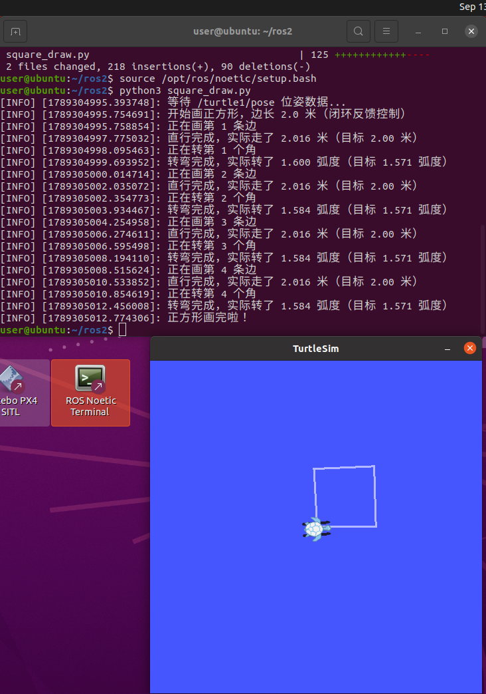

小海龟画正方形实验
一、实验目的与环境说明
1.1 实验目的
- 掌握 ROS 话题通信机制：节点作为发布者向
/turtle1/cmd_vel话题发布geometry_msgs/Twist速度消息，同时作为订阅者接收/turtle1/pose话题的turtlesim/Pose位姿消息； - 利用实时位姿反馈判定到位——欧氏距离判定直行距离、朝向角差累计判定转弯角度；
- 通过 turtlesim 仿真器，让小海龟自主精准绘制一个边长 2 m 的正方形并回到起点。
1.2 实验环境
| 项目 | 配置 |
|---|---|
| 操作系统 | Ubuntu 20.04（VMware 虚拟机） |
| ROS 发行版 | ROS Noetic |
| 仿真器 | turtlesim |
| 编程语言 | Python 3（rospy） |
| 功能包 | turtle_motion |
功能包目录结构如下：
turtle_motion/
├── package.xml # 包清单，声明依赖 rospy 和 geometry_msgs
├── CMakeLists.txt # 编译配置，把脚本安装到 bin 目录
└── scripts/
└── square_draw.py # 主程序：控制小海龟画正方形的节点
二、核心控制原理与算法解析
2.1 话题通信机制
turtlesim 仿真器启动后，小海龟会一直订阅名为 /turtle1/cmd_vel 的话题。我们编写的节点 turtle_square_node 作为发布者，向该话题发布 Twist 消息控制海龟运动；与此同时，海龟通过 /turtle1/pose 话题持续广播自己的位姿（turtlesim.msg.Pose，包含坐标 x、y 和朝向角 theta），本节点订阅该话题，实时读取位姿作为反馈。
Twist 消息中本实验只用到两个分量：
linear.x：线速度，控制海龟前进的快慢（单位 m/s）；angular.z：角速度，控制海龟转头的快慢（单位 rad/s），取正值绕 z 轴逆时针旋转，即左转。
Pose 消息中用到三个分量：
x、y：海龟在平面上的坐标（单位 m）；theta：海龟的朝向角（单位 rad，取值范围 ）。
注意：turtlesim 内置 0.5 秒看门狗——只要超过 0.5 秒没有收到新的 cmd_vel 消息，它就会自动把海龟速度清零（强制刹车）。所以控制循环必须高频持续发布：本实验用 rospy.Rate(50) 以 50 Hz 的频率采样位姿并重发当前指令，直到动作到位。
2.2 闭环反馈控制
本实验订阅 /turtle1/pose 话题，用海龟的实时位姿作为反馈，边运动边判断什么时候到位，属于闭环控制：
- 直行一条边：记录出发时的起点坐标 ，控制循环里实时计算已移动的欧氏距离
当 达到目标边长 时立刻发布零速度停车，不受实际速度波动影响。 - 左转 90°：实时累计朝向角的变化量。由于 theta 的取值范围是 ，跨过 ±π 边界时数值会突变（例如从 π 跳到 -π），所以每个控制周期的角度差要先跨界归一化到 再累加；累计角度差达到 时立刻停车，精确转满 90°。
2.3 动作间隙的稳定处理
每次直行或转弯结束后，海龟需要一段短暂的稳定时间，让位姿反馈完全收敛。因此：
- 每次动作到位后，立即发布一条全零速度消息
Twist()，让海龟停下； - 再以 50 Hz 持续发布空
Twist停顿 0.3 秒，把上一次动作的距离与角度误差彻底清零，避免误差跨动作累计，再进入下一个动作。
2.4 算法流程
- 初始化节点
turtle_square_node，创建指向/turtle1/cmd_vel的发布者、订阅/turtle1/pose的订阅者，以及rospy.Rate(50)频率控制对象； - 等待第一帧位姿消息，保证反馈数据可用；50 Hz 的控制频率同时保证
cmd_vel指令持续发布，不会触发 turtlesim 0.5 秒看门狗刹车； - 循环 4 次，每轮执行：闭环直行一条边（欧氏距离达到 2 m 停）→ 空速度停顿 0.3 秒 → 闭环左转 90°（累计角度差达到 π/2 停）→ 空速度停顿 0.3 秒；
- 循环内外均通过
rospy.is_shutdown()和try/except/finally做保护，节点被Ctrl+C中断时海龟也能安全停下。
三、完整源码展示
3.1 主程序 scripts/square_draw.py
最新源码同步保存在本书仓库
src/chap1/square_draw.py，可直接查看与下载。
#!/usr/bin/env python3
# -*- coding: utf-8 -*-
# 小海龟画正方形节点（闭环反馈控制版）：turtle_square_node
# 思路：直走一条边 -> 停 0.3 秒 -> 左转 90 度 -> 停 0.3 秒，循环 4 次就是正方形
#
# 与开环版本的区别：订阅 /turtle1/pose 实时获取海龟位姿 (x, y, theta)，
# 用反馈信息判断"走够了没有 / 转够了没有"，距离和角度一到位就立刻停下，
# 不再依赖固定时长，从根上消除距离与角度的累计误差。
import math
import rospy
from geometry_msgs.msg import Twist
from turtlesim.msg import Pose
class SquareDrawer:
"""闭环反馈控制：小海龟精准绘制边长 2 m 的正方形"""
def __init__(self):
# 初始化节点
rospy.init_node('turtle_square_node')
# 发布者：把速度指令发到 /turtle1/cmd_vel 话题
self.pub = rospy.Publisher('/turtle1/cmd_vel', Twist, queue_size=10)
# 订阅者：实时接收 /turtle1/pose 话题上的位姿
self.pose = None
rospy.Subscriber('/turtle1/pose', Pose, self.pose_callback)
# 50 Hz 闭环控制频率：高频采样位姿并重发指令，防止 0.5s 看门狗刹车
self.rate = rospy.Rate(50)
# 运动参数
self.side_length = 2.0 # 正方形边长 2 m
self.linear_speed = 1.0 # 线速度 1.0 m/s
self.angular_speed = 1.0 # 角速度 1.0 rad/s
self.turn_angle = math.pi / 2 # 左转 90 度
def pose_callback(self, msg):
"""位姿回调：把最新位姿存下来，控制循环里随时读取"""
self.pose = msg
def publish_velocity(self, linear=0.0, angular=0.0):
"""组装并发布一条速度指令"""
twist = Twist()
twist.linear.x = linear
twist.angular.z = angular
self.pub.publish(twist)
def wait_for_pose(self):
"""等第一帧位姿消息到来，保证反馈数据可用"""
while self.pose is None and not rospy.is_shutdown():
rospy.loginfo_throttle(1.0, "等待 /turtle1/pose 位姿数据...")
self.rate.sleep()
def pause(self, duration=0.3):
"""持续发布空 Twist 停顿 0.3 秒，把上一次动作的误差彻底清零"""
end = rospy.Time.now() + rospy.Duration(duration)
while rospy.Time.now() < end and not rospy.is_shutdown():
self.publish_velocity()
self.rate.sleep()
def move_straight(self, distance):
"""闭环直行：从当前位姿出发，欧氏距离走满 distance 就精准停下"""
start_x = self.pose.x
start_y = self.pose.y
moved = 0.0
while not rospy.is_shutdown():
# 实时计算已移动的欧氏距离
moved = math.hypot(self.pose.x - start_x, self.pose.y - start_y)
if moved >= distance:
break
# 没走够就继续前进，50 Hz 持续发布防看门狗刹车
self.publish_velocity(linear=self.linear_speed)
self.rate.sleep()
self.publish_velocity() # 到位立刻发零速度停车
rospy.loginfo("直行完成，实际走了 %.3f 米（目标 %.2f 米）", moved, distance)
def turn(self, angle):
"""闭环转向：实时累计朝向角差（±π 跨界归一化），转满 angle 就精准停下"""
total_turned = 0.0
prev_theta = self.pose.theta
while not rospy.is_shutdown():
# 本周期转过的角度差，先归一化到 [-pi, pi] 再累加，防 ±π 跨界跳变
delta = self.normalize_angle(self.pose.theta - prev_theta)
total_turned += delta
prev_theta = self.pose.theta
if total_turned >= angle:
break
# 没转够就继续左转
self.publish_velocity(angular=self.angular_speed)
self.rate.sleep()
self.publish_velocity() # 到位立刻发零速度停车
rospy.loginfo("转弯完成，实际转了 %.3f 弧度（目标 %.3f 弧度）",
total_turned, angle)
@staticmethod
def normalize_angle(a):
"""把角度差归一化到 [-pi, pi]，处理 ±π 附近的跨界跳变"""
while a > math.pi:
a -= 2 * math.pi
while a < -math.pi:
a += 2 * math.pi
return a
def run(self):
# 等位姿数据就绪，然后停一下让海龟初始状态稳定
self.wait_for_pose()
self.pause()
rospy.loginfo("开始画正方形，边长 %.1f 米（闭环反馈控制）", self.side_length)
for i in range(4):
# 闭环直行一条边
rospy.loginfo("正在画第 %d 条边", i + 1)
self.move_straight(self.side_length)
self.pause()
# 闭环左转 90 度
rospy.loginfo("正在转第 %d 个角", i + 1)
self.turn(self.turn_angle)
self.pause()
rospy.loginfo("正方形画完啦！")
if __name__ == '__main__':
node = SquareDrawer()
try:
node.run()
except rospy.ROSInterruptException:
# 按 Ctrl+C 或者节点被关掉的时候走到这里
rospy.loginfo("节点被中断，让海龟停下来")
finally:
# 不管正常画完还是中间出错，最后都再发一次 0 速度，保险一点
if not rospy.is_shutdown():
node.publish_velocity()
3.2 构建文件 CMakeLists.txt
cmake_minimum_required(VERSION 3.0.2)
project(turtle_motion)
## 查找catkin和我们用到的依赖（rospy、geometry_msgs和turtlesim）
find_package(catkin REQUIRED COMPONENTS
rospy
geometry_msgs
turtlesim
)
## 声明这个catkin包，因为包里面只有python代码，所以不用导出库
catkin_package()
## 把square_draw.py装到bin目录下，装好之后就可以用
## rosrun turtle_motion square_draw.py 直接运行了
catkin_install_python(PROGRAMS
scripts/square_draw.py
DESTINATION ${CATKIN_PACKAGE_BIN_DESTINATION}
)
3.3 包清单 package.xml
<?xml version="1.0"?>
<!-- turtle_motion 功能包清单：小海龟自主绘制正方形轨迹 -->
<package format="2">
<name>turtle_motion</name>
<version>0.0.0</version>
<description>turtle_motion: 小海龟自主绘制正方形轨迹功能包</description>
<maintainer email="tianyutu981@todo.todo">tianyutu981</maintainer>
<license>TODO</license>
<!-- 构建工具依赖 -->
<buildtool_depend>catkin</buildtool_depend>
<!-- 构建依赖 -->
<build_depend>rospy</build_depend>
<build_depend>geometry_msgs</build_depend>
<build_depend>turtlesim</build_depend>
<!-- 运行依赖 -->
<exec_depend>rospy</exec_depend>
<exec_depend>geometry_msgs</exec_depend>
<exec_depend>turtlesim</exec_depend>
<export>
</export>
</package>
四、运行与验证
4.1 编译功能包
把 turtle_motion 放到工作空间 src 目录下（不要放在共享目录里编译），然后：
cd ~/catkin_ws # 进入工作空间根目录
catkin_make # 编译
source devel/setup.bash # 刷新环境
4.2 启动节点
一共需要三个终端：
# 终端1：启动 ROS 主节点
roscore
# 终端2：启动小海龟仿真器
rosrun turtlesim turtlesim_node
# 终端3：运行画正方形节点
rosrun turtle_motion square_draw.py
4.3 话题订阅/发布验证
在节点运行的同时，另开终端依次执行：
rostopic list # 查看所有话题，确认 /turtle1/cmd_vel 与 /turtle1/pose 存在
rostopic info /turtle1/cmd_vel # 查看速度话题类型，应为 geometry_msgs/Twist
rostopic info /turtle1/pose # 查看位姿话题类型，应为 turtlesim/Pose
rostopic echo /turtle1/cmd_vel # 实时打印发布者发出的速度消息
rostopic echo /turtle1/pose # 实时打印海龟位姿（坐标 x、y 与朝向角 theta）
rosnode list # 确认 turtle_square_node 已注册
节点运行时 rostopic echo /turtle1/cmd_vel 的输出节选如下：直行阶段只有 linear.x 为 1.0，转弯阶段只有 angular.z 为 1.0，动作之间为全零停机消息。由于控制循环以 50 Hz 持续发布，同一动作期间会连续刷出内容相同的消息，直到动作到位；rostopic echo /turtle1/pose 则可以看到位姿实时变化。
linear:
x: 1.0
y: 0.0
z: 0.0
angular:
x: 0.0
y: 0.0
z: 1.0
---
4.4 预期结果
节点运行后，在 turtlesim 窗口中可以看到小海龟沿直线行走 2 m、左转 90°，重复 4 次后回到起点，绘制出一个边长 2 m 的正方形；终端同步打印 正在画第 N 条边、直行完成，实际走了 2.000 米、转弯完成，实际转了 1.571 弧度 等日志，最后输出 正方形画完啦！。

五、总结
本实验通过编写"发布者 + 订阅者"一体的节点，向 /turtle1/cmd_vel 话题发布 Twist 消息、订阅 /turtle1/pose 话题读取位姿，实现了小海龟自主精准绘制正方形的任务。实验中掌握了 ROS 话题通信的收发两端用法，理解了闭环反馈控制的原理——欧氏距离判定直行到位、朝向角差累计（含 ±π 跨界归一化）判定转弯到位，并练习了 50 Hz 高频循环规避 turtlesim 0.5 秒看门狗、动作间空速度停顿消除累计误差等工程技巧。相比时间开环控制，闭环方案不受实际速度波动影响，轨迹精度更高。